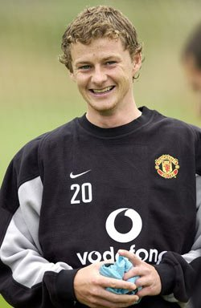
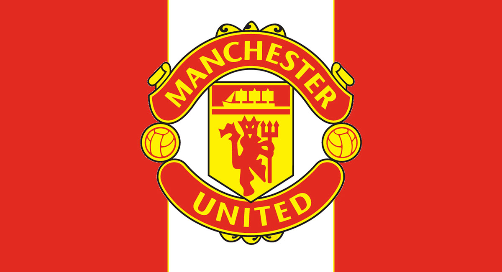
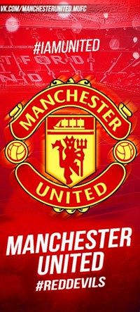

|
Оле |  | Трансферы |  | Сезоны |
| Сульшер |
Самые дорогие трансферы
|
Турики | |||
| норвежский футболист и футбольный тренер. Выступал на позиции нападающего. После завершения карьеры игрока тренировал резервный состав «Манчестер Юнайтед», «Кардифф Сити» и «Молде» | Достижения
|
||||
Цели
|
а«Я провел великолепную работу с резервной командой «Ман Юнайтед», что заложило фундамент для того, чтобы попробовать себя затем на новом месте. Я почувствовал, что настало время вернуться в Норвегию, что будет полезно и для моей семьи. Абсолютно уверен, что у меня все получится», - проводил свои мысли сэр Сульшер. | ||||